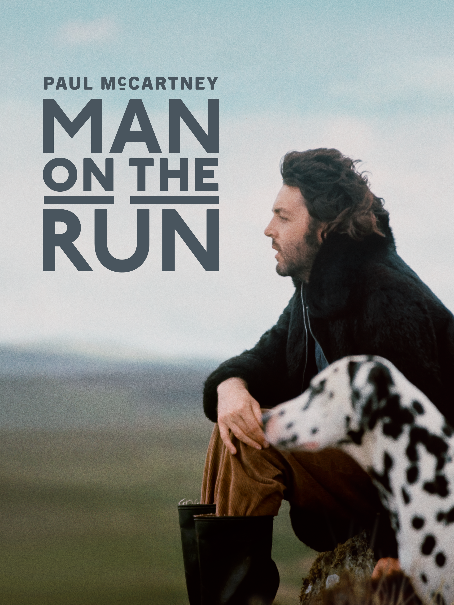
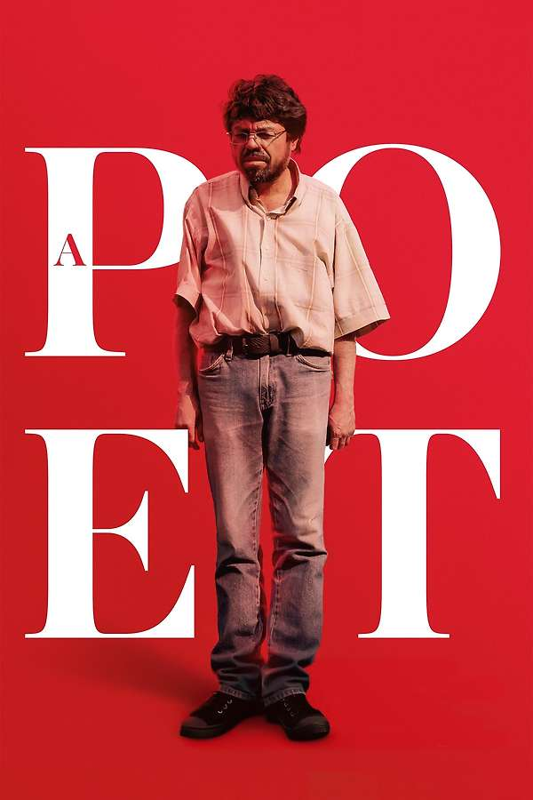
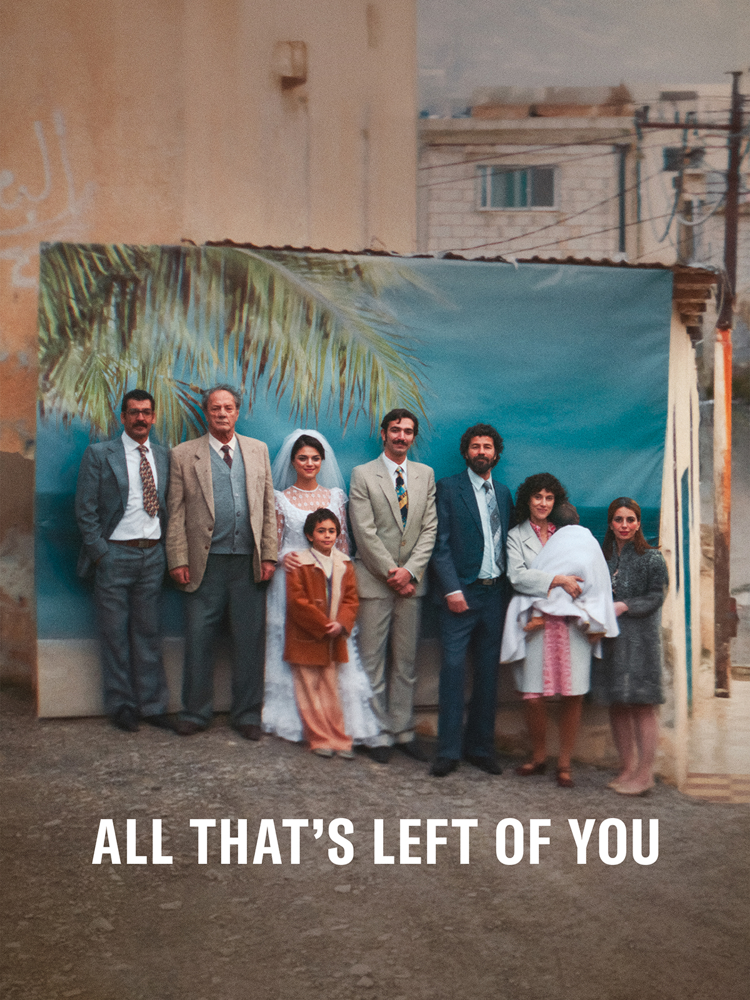
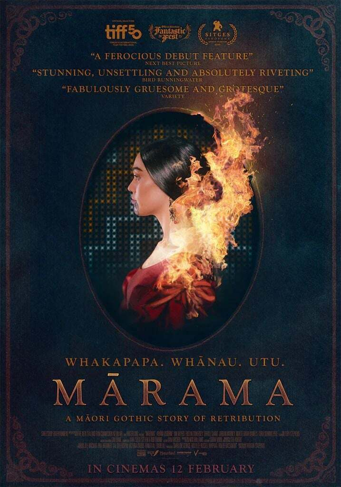
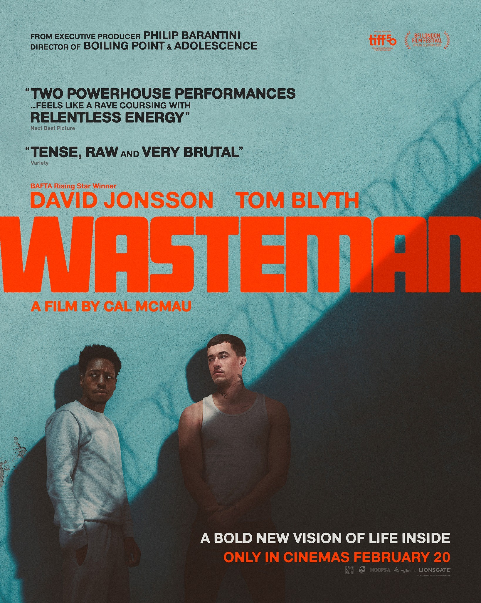

Man On The Run
A music documentary chronicling Paul McCartney's post-Beatles rebirth and the rise of Wings in the 1970s.

A Poet
An intimate journey into the struggles and revelations of an artist navigating words and legacy.

All That's Left Is You
A powerful emotional drama following memories, personal ties, and the passage of time.
American Doctor
A deep dive into medical breakthroughs, ethical dilemmas, and high-pressure hospital corridors.

Marana
A gripping psychological thriller set in an isolated landscape where secrets slowly surface.

Wasteman
A gritty urban drama tracing resilience, survival, and unexpected kinship in the city.